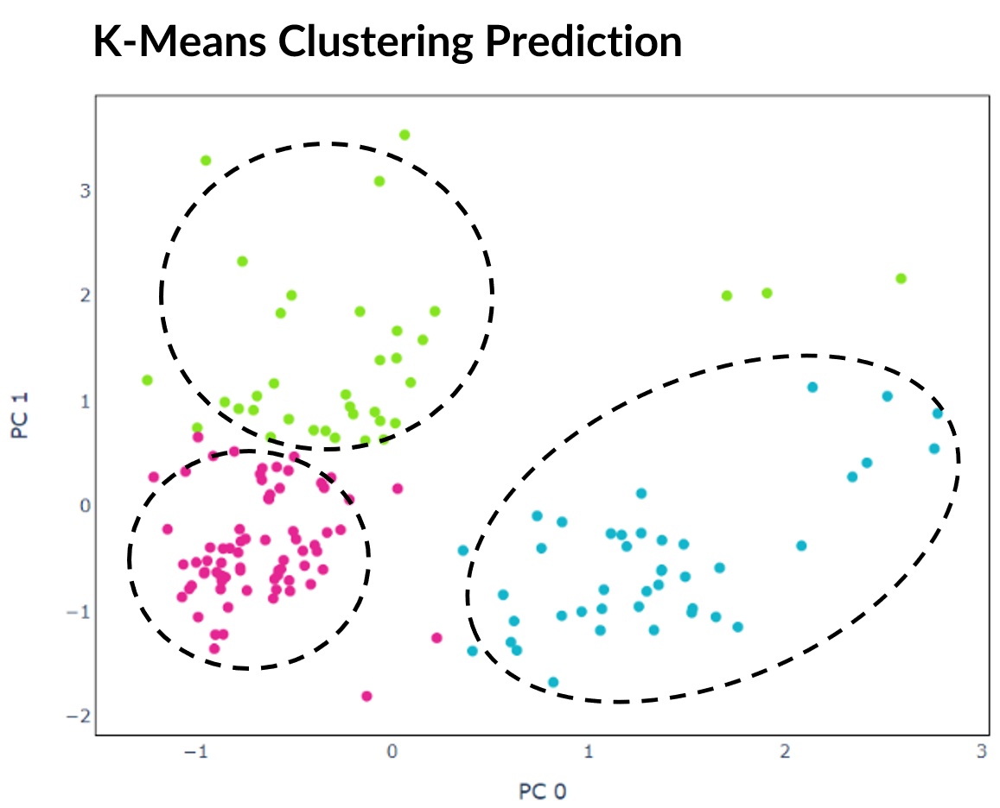

About
This site gives an overview of my undergraduate dissertation, though may also be used as an introduction to some useful computational methods for the analysis of single-cell RNA sequencing data. The aim is to experiment with clustering and topological data analysis to detect hidden gene expression in three different types of datasets. For more detail, refer to the paper.
Background
Genes and Proteins
In biology, genes are small sections of DNA that encode proteins. These are important biomolecules with a large range of functions such as: enzymes, antibodies, structural proteins, storage or cell signalling. Studying gene expression can therefore reveal useful knowledge about the biological processes of cells.
Proteins are produced in cells through two steps: transcription and translation. During transcription, DNA is unzipped and sections copied using the enzyme RNA polymerase to produce a complementary molecule called messenger RNA (mRNA). The mRNA then travels to a ribosome where a protein is constructed in a process known as translation. This means that cellular gene expression can be inferred through reading the sequence of bases RNA.
Single-Cell RNA-Sequencing
Single-cell RNA sequencing (scRNA-seq) is a method in which genetic expression is measured across a population of heterogeneous cells of the same type. This has many uses such as detection of rare subpopulations of cells or gene co-expression.
First viable, individual cells are isolated from a tissue sample. For each, the membrane is broken down in a process called lysis as this improves the capture of RNA molecules. Then tagged complementary DNA (cDNA) is synthesized from mRNA through reverse transcription. Small volumes of cDNA are amplified using a technique such as polymerase chain reaction (PCR) which facilitates rapid creation of millions of copies. Each cell’s cDNA library is pooled, then bases read and matched to genes to produce a dataset of counts for each cell.
Improvements in sequencing technologies have made it easy for scientists to read gene expression for thousands to millions of cells. This provides an abundance of big data suitable for evaluation by computational methods that would be hard to analyse by hand in a lab.
Datasets
Benchmark
The first dataset was created by Tian et al. and contains 16,468 gene counts for 902 cells produced using the 10X Chromium scRNA-seq protocol. It is officially named sc_10x, though here is referred to as the "benchmark dataset" as it was used as a gold standard during testing and development.
The cells consist of a mixture from three human lung adenocarcinoma cell lines HCC827, H1975 and H2228. These assignments are provided within the dataset's metadata and can therefore be used as target labels. However, it should be noted that for many real-world applications of scRNA-seq, these targets would be unknown. Each cell has been coloured accordingly in the plot below of PCA with two principal components. The 150 cells randomly selected for initial experimentation are represented by the coloured in dots.
Simulated
The second dataset consists of 2000 cells with 16,468 genes each. It was made during this project using the Splat simulator, which is part of the R package Splatter. The code and CSV files of the data are available to download from my GitHub. To replicate real gene expression, the Splat simulator was seeded with the benchmark dataset sc_10x.
Each sample belongs to one of four target groups as shown in the plot below. This time, 500 samples were randomly selected for initial experimentation.
Mouse Cortex
The final dataset is by Zeisel et al. and contains 3005 brain cells each with 1072 genes from mouse cortex and hippocampus. It is available to download from Linnarsson Lab.
Each cell is assigned to one of nine numerical groups and 47 subgroups determined using BackSPIN biclustering. As explained in the original paper, these subgroups comprise all known major cell types in the cortex. The initial nine groups are labelled according to cell type as: astrocytes-ependymal, endothelial-mural, interneurons, microglia, oligodendrocytes, pyramidal CA1 or pyramidal SS. Though groups 1 and 2 are assigned class joint pyramidal CA1, and 7 and 8 astrocytes-ependymal and so there are seven target labels. Again 500 cells were randomly selected for initial experimentation.
Clustering
Clustering Algorithms
There are many clustering algorithms and tools to choose from, including those designed for scRNA-seq data such as SC3, SIMLR or BackSPIN. However, for this project I tested six standard clustering algorithms from scikit-learn:
- K-means: A commonly used iterative centroid based algorithm that divides data points into k clusters
- Agglomerative hierarchical clustering: A form of hierarchical clustering that builds a hierarchy of clusters by recursively merging pairs
- Balanced iterative reducing and clustering using hierarchies (BIRCH): Another form of hierarchical clustering designed for clustering large datasets
- Mini batch k-means: An alternative version of k-means that instead clusters small subsets of the data each iteration to reduce memory usage
- Spectral clustering: A type of clustering that constructs a connected graph of data points and assigns clusters by partitioning into subgraphs
- Gaussian mixture: Clustering using a mixture of multiple Gaussian distributions
Preprocessing
A problem with scRNA-seq data is that it is high-dimensional as each cell contains many features. Many of the genes only exhibit noise and so clustering will not work well if directly applied to the gene counts. Therefore the data must be preprocessed using a method to extract the most representational features.
Autoencoders
An autoencoder is a type of artificial neural network with an encoder-decoder architecture that learns a compressed representation of the data. During training, the gene counts are given as input and the network will attempt to recreate this and return it at the output layer. After training, the output layer can be discarded and the encoding retrieved from the network's bottleneck layer. This learnt encoding can be used directly, or in combination with additional pre-processing techniques for clustering. It is good practise to test different network architectures and hyperparameters to improve the recreation accuracy of a dataset. For this project, the autoencoder's encoding size was set to 16 and the parameters optimised for the benchmark dataset. This includes:
- Setting the PReLU activation function after the first linear layer in the encoder
- Using the AMSGrad variant of the Adam optimiser with learning rate 0.001
- Training through mini-batch gradient descent with a batch size of four
Dimensionality Reduction Algorithms
There are lots of algorithms available for feature extraction and it is worth trying out different methods. These may be used in combination with, or as an alternative to the encoding produced by the autoencoder. Some commonly used techniques that I investigated are:
- Principal component analysis (PCA): A statistical technique that find the top principal components that maximise variance by solving a eigenvector problem
- Independent component analysis (ICA): A method designed for signal processing that transforms a set of vectors into a maximally independent set
- Non-negative matrix factorization (NMF): A technique that extracts features from a set of non-negative vectors
Before running these algorithms, the number of features to reduce the data to must be specified. Specific genes are not directly selected, but instead new features are created from weighted combinations of genes. Investigating which genes provide the largest contributions to these top components may also reveal additional information of interest. For example in the graph below, after applying PCA to the benchmark dataset, plotting the magnitude of the eigenvector loading scores for the top three principal components discloses which genes show the greatest variation between cells.
Standardization
Standardization is the process of scaling features so that they have a mean of 0 and standard deviation 1. Applying this before feature extraction sometimes works very well at improving the performance of clustering as it can cause similar cells to be closer together while increasing distance between those that are dissimilar. It will also result in a more even distribution of gene contribution to extracted features, for example as shown in the graphs below. However, its effectiveness varies depending on the structure of data and the combination of other preprocessing methods applied and occasionally this step could be detrimental.
Furthermore, it is recommended to apply standardization before running a clustering algorithm such as k-means, for example following feature extraction by PCA. This ensures all features are within the same range when the algorithm calculates distance.
t-Distributed Stochastic Neighbor Embedding
t-SNE is an algorithm well suited to visualisation of high-dimensional data. It is popular for scRNA-seq data as it isolates groups of cells while preserving local similarities. This is achieved by minimising the Kullback-Leibler divergence over two probability distributions constructed from the high-dimensional and low dimensional space. Unlike other dimensionality reduction techniques, with t-SNE global geometry is lost due to the random initialisation of the algorithm. This means that the distance between and position of groups of cells do not have any significant meaning. If using t-SNE, it is advisable to apply another dimensionality reduction method beforehand to remove noise.
Measuring Correctness
Clustering algorithms are unsupervised meaning that they are not guided by a target output. However, clustering can often be misleading and just because a cluster assignment looks reasonable does not mean it is correct.

Arbitrary numerical values are outputted by clustering algorithms to represent the predicted cluster for each cell. As each selected dataset contains group labels, it possible to evaluate correctness by finding the optimal mapping between these labels and predictions. There are multiple methods to achieve this, but for this project I constructed a bipartite graph between the two sets and applied the Hungarian matching algorithm to find the maximal-weight matchings. These were used to calculate performance metrics such as accuracy and adjusted Rand index (ARI). The difference can also be plotted to visualise which cells the clustering algorithm was not able to correctly predict.
Results and Findings
Best Results
Benchmark Dataset
One reason this dataset is ideal for benchmarking is that an extensive table of results is avaliable from experimentation with different normalisation techiques, imputation methods and clustering algorithms commonly used for scRNA-seq including: RaceID, RaceID2, RCA, seurat, clusterExperiment, and SC3. These are also documented in a paper by L. Tian et al. The best result they achieved was 0.742 ARI using SC3 clustering.
By comparision, I was able to achieve a much higher ARI of 0.997 and accuracy 99.9% in which 901 out of 902 cells were assigned to the correct cell line. This was possible through a combination of standardization, PCA / ICA with three components and BIRCH / agglomerative hierarchical clustering.
Simulated Dataset
For the Splat simulated dataset, I was able to correctly group all 2000 cells resulting in 100% accuracy. This was accomplished through applying standardization and PCA / ICA with four components in combination with agglomerative hierarchical clustering, BIRCH or mini batch k-means.
Mouse Cortex Dataset
The best accuracy I was able to achieve for this dataset was poor at 44.4%. Compared to the previous two datasets, cells show an overlapping spectrum of gene expression in the lower dimensional space when using pre-processing techniques attempted in this project. This is a problem as standard clustering methods require some degree of seperation to reliably assign clusters.
Another issue is that the ground truth was derived using the BackSPIN biclustering algorithm. While standard clustering algorithms such as k-means divide cells into clusters, biclustering is a different class of algorithms that cluster cells and genes simultaneously enabling cells to be grouped by gene co-expression. As explained in the original paper by Zeisel et al., many of the genes in this dataset are not related to every sample making biclustering more suitable.
Observations
Autoencoders
- The best clustering results for the benchmark dataset were attained without encoding, while top results were achieved both with and without encoding the simulated data. Effectiveness was therefore dependent on the data, though it is always worth testing multiple approaches.
- I kept the encoding size at 16 for this project, though ideally different encoding sizes should be tested.
- t-SNE was more effective when combined with the autoencoder's encoding.
t-SNE
This is a good option to try if cells are not separable by other methods, however, should be used with caution as it has can produce misleading results. For example in the graph below, all cells in the predicted clusters are close together so without looking at the expected cell lines it is not obvious that one cell is incorrect.
If using t-SNE, different values for the hyperparameter perplexity should be tested as changing this causes results to vary significantly.
Topological Data Analysis
Mapper
A simplicial complex is a type of graph that represents data with many features through a high-dimensional shape. Compare to graphs produced through standard dimensionality reduction techniques, this gives a higher-dimensional overview of a dataset to provide insight into relationships in gene expression between cells.
Mapper is a TDA algorithm that constructs a simplicial complex through dimensionality reduction, clustering, and graph networks. Kepler Mapper is a Python implementation of Mapper that was used for this project.
Parameter Tuning
There is no right way to construct a simplicial complex, but the aim is to reveal topological features. For Kepler Mapper, the main hyperparameters to tune are epsilon and hypercubes:
- Epsilon: When epsilon is small, many of the nodes are separated, while increasing it too much results in most nodes being connected losing the topological features.
- Hypercubes: Using only a few hypercubes creates a simple graph, while increasing this reveals more complexity.
Results
Each dataset was first projected onto a lower-dimensional space using 2 principal components, then a simplicial complex constructed using 10 hypercubes with 0.15 overlap and k-means clustering. For all three datasets, the same hyperparameters were used so that topological features can be compared.
Simplicial Complex of Benchmark Dataset
In the interactive graph below, the cell lines are identifiable as the three most connected regions. As most nodes are connected, this suggests that most cells have some correlation in gene expression. There are also several nodes that are not joined to the main complex representing small subgroups of cells with more unusual gene expression. However, it is worth pointing out that if the parameter epsilon was increased then some of these nodes would join the main complex, while if it was decreased then more of these distinct nodes would form.
Simplicial Complex of Simulated Dataset
Compared to the benchmarking data, the groups of the simulated data are much more clearly defined and separated from one another. This suggests that gene expression between the groups do not overlap as much as true biological data. Furthermore, the groups themselves form straight lines indicating that there is a lot less variation within each of them.
Simplicial Complex of Mouse Cortex Dataset
The simplicial complex of this dataset is far more complicated than the others reflecting the greater variation of gene expression within the mouse cortex and hippocampus. As seen during clustering, the groups are not well defined, though this graph implies most cells can be split into two distinct regions. There are also far more individual nodes compared to the other datasets, though this is likely because this dataset contains the most cells.
Code
Code was written in Python 3.6.9 and R 4.0.3 across two Jupyter notebooks, both of which are available to download from GitHub. These were developed in Google Colab, though alternatively can be run through Jupyter Notebook.
Splat Simulator
The purpose of notebook Splat_Simulator.ipynb is to produce new, artificial scRNA-seq data. For this project, it was used to create the simulated dataset, though can easily be altered to make new data for other purposes.
Gene counts and group labels are generated using the Splat simulator, which is part of the R package Splatter, and so the code contains a mix between Python and inline R. To mimick true biological gene expression, the benchmark dataset has been set to use as a seed, though this could be swapped out to imitate another dataset. After seeding the simulator, datapoints are generated with each belonging to one of four groups. The new data and labels are then saved as CSV files using Python. These can be downloaded and reopened to use in the second notebook.
Clustering and TDA
In the notebook Clustering_and_TDA.ipynb, experimentation is performed on the three given datasets. However, it has been designed so that it could be easily run with new data.
First the datasets and their target labels are opened as dataframes. These datasets are downloaded from URL so that the notebook can be run with no set up required. Next, a dataset is selected and an autoencoder with customisable hyperparameters created using PyTorch Lightning to use as a feature extractor for the gene counts. Then clustering is performed to divide cells into groups which show similar gene expression. Several clustering algorithms can be chosen including: k-means, agglomerative hierarchical, BIRCH, mini-batch k-means, spectral and Gaussian mixture. The encoding produced by the autoencoder can optionally be used, along with other dimensionality reduction methods such as PCA, ICA or NMF and techniques such as standardization and t-SNE. At the end of the notebook, Kepler Mapper is run on the gene counts to produce a simplicial complex to reveal the topological shape of the high-dimensional data.
Graph Finder
Enter keywords to search for a clustering or topological data analysis experiment result: